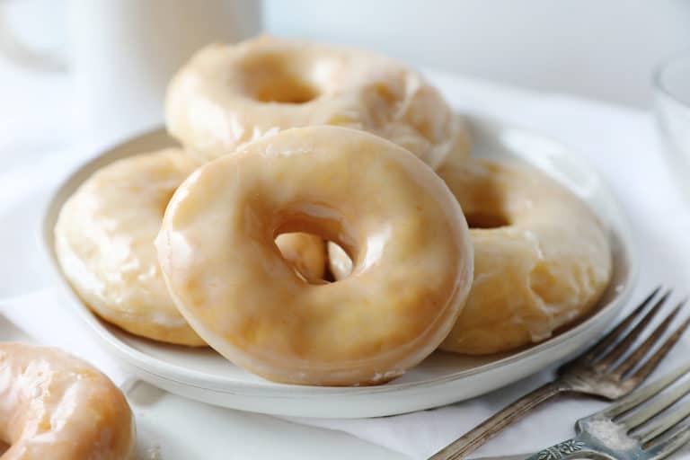

Amish Glazed Donuts

Description
This recipe was originally found in a cookbook from a church in
Pennsylvania. This recipe actually doesn't vary from traditional recipes.
The main difference is the method, as most recipes seem to have
the same basic ingredients.
Ingredients
- milk
- sugar
- butter
- yeast
- eggs
- flour
Step by Step Instructions
Donuts
- In a medium saucepan over medium-high heat, pour milk. When the milk is hot but not boiling, add in the sugar, salt, and butter.
- Set aside to cool down. (about 5-10 minutes)
- Add yeast packets and 2 teaspoons sugar to warm water. (I used hot water out of the faucet)
- Let sit for 5 minutes, allowing mixture to grow and bubble. If your yeast does not bubble, it may be bad and this is a good time to start again.
- In the bowl of a stand mixer fitted with the dough hook attachment,
add in the milk mixture and water mixture. To this add the eggs and mix for a couple of minutes to combine.
- Add in the flour 1 cup at a time with the mixer on low. (You can also turn the mixer off, add flour, turn mixer on 2, knead a bit,
then mixer off again and repeat for all the flour.) After last flour has been added knead for 10 minutes.
- Drop the dough into a greased bowl and let rise 1 hour. It should double in size.
- After an hour, punch down the dough. Allow dough to rise for 1 more hour.
Glaze
- On the last rise, prepare the glaze. Mix all ingredients in a medium to large bowl. Whisk until they are smooth and you have reached the
desired consistency. (I think the perfect consistency is the same as the corn syrup, not too runny but loose enough for it to fall beautifully
over all the nooks and crannies of the donut.)
Preparing the Donuts
- Roll out the dough to 1/2 inch or up to 3/4 inches thick. It is important to make sure the dough is at least 1/2 thick or your donuts will be too flat.
- Once rolled out, use a donut cutter to cut out shapes. If you do not have a donut cutter, use a round tool like a kitchen glass or a jar lid that is about
3-inches across. You can use a bottle cap or small shot glass for the smaller hole.
- Set cut-out donuts on a baking sheet. I filled up 4 baking sheets with donuts and donut holes.
- Starting with the first pan of donuts you cutout (meaning that those donuts have been allowed to rise a bit more while you cut out the rest) drop one donut
at a time into vegetable oil that has been heated to 350°F.
- Allow each donut to brown for 45seconds to 1 minute on one side, and then flip over so that the other side may brown.
- Carefully remove donut from oil (I prefer and hand-held strainer) and set on a plate lined with paper towels.
- While donuts are warm, submerge into the glaze. Using a wooden spoon handle or a fork, rotate the donut so that both sides are covered. Lift and let drain
into the bowl, then move the donut to a baking sheet with a cooling rack in it. (You can also place on parchment or wax paper but the glaze might pool.)
- Donuts can be enjoyed immediately or you can double dip them depending on how much glaze you like.
- Store donuts in between parchment paper in an airtight container for up to two days.